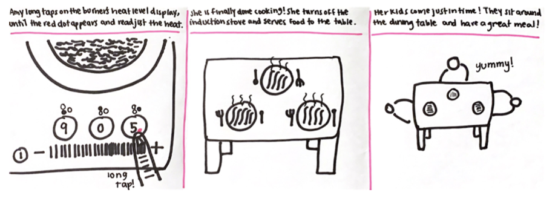

Personas & Storyboarding
In the first unit of UIUX, we learned how to make observations on interfaces and create personas that represent a specific
user in mind. This project aims to follow the lifecycle of an interface by creating
personas and a storyboard that illustrates the user's experience of the interface from
start to finish. The interface I chose for this project is the control panel of a three burner induction cooktop in my home's kitchen.
Due to social distancing guidelines, I've decided to observe my parents and my cousin using the interface after receiving their consent.
Control Panel of a Three Burner Induction Cooktop
- LED touch screen
- Main power button
- Central heat settings touchpad
- Heat settings display for each burner between levels 0-9
- To activate a burner and its controls, long tap on its heat settings display
- Red dot next to heat settings display indicates that the burner is activated and in control
I. Observations
1. Mom
- Taps on the power button multiple times until a sound is heard.
- Tries tapping on the plus and minus signs that aren't functional and responsive.
- Constantly wipes oil and liquid off the stove buttons while cooking.
- Sometimes taps but sometimes drags her fingers on the touchpad to adjust the heat.
2. Dad
- Long presses the power button once to turn on the stove.
- Uses the heat range touchpad as a slider to adjust the heat.
- Leaves hand on the control panel while cooking.
3. Cousin
- Made a mistake on changing the temperature of the wrong stove.
- Power button becomes responsive after rubbing off food stains.
- Never changed heat levels while cooking.
II. Responses to Questions about Their Interactions with the Interface
1. Do you encounter any issues starting and turning off the induction stove?
- Trial and error; tap until it turns on and off. Wait until a sound is heard to be certain.
- No, long pressing has worked most of the time. Although it doesn’t work with wet fingers.
- Trouble turning the stove off when there’s food stain on the surface.
2. If you’ve used another kind of stove before, how does your experience adjusting heat differ from using the induction cooktop control panel? Is the change more convenient or confusing?
- Used to knobs and adjusting heat clockwise. This method is more confusing.
- Treated the adjustment touchpad as a horizontal scale. Feels more natural to drag on the touchpad than tapping on desired heat level.
- Used to being able to adjust heat for each stove, not uniformly. Confusing to understand the connection between numeric heat level and the heat adjusting controller.
3. How do you understand the number indicating the stove’s heat level (0-9)?
- I equate 3 as low heat, 6 as medium heat, and 9 as high heat.
- I determine the heat level by the scale and pay less attention to the number. The scale has lines that represent heat levels based on how densely aligned they are.
- I normally leave the heat settings at 7 and cook.
4. Does your experience differ when you have multiple or all burners turned on and used simultaneously? If so, how?
- I often change the heat settings of the wrong burner.
- Takes time to change the heat setting to a different cooking zone.
- You can only tell if you activated the cooking zone by tapping on the heat setting of that burner and a dot appears. However, sometimes I can’t tell because my fingers cover it.
III. Personas
1. Amy, Mother of Two
Who is Amy?
Amy is a mother of two who has a part-time job in the afternoon. She comes back from work with 1 hour to spare before her children return home from school. Within that time, she scurries to prepare dinner for her kids.
What problems does she face?
When Amy cooks, she normally occupies most or all of the cooking zones at once. Under time pressure, she sometimes adjusts the heat settings of the wrong burner thinking that the control was pointing to it. She also mistakens the + and - signs as being tappable and taps on it to increase or decrease the heat settings rather than using the touchpad that lies between the signs. As a result, she feels overwhelmed to cook multiple dishes at once.
How does she represent the users of the interface?
Amy represents a portion of users of the induction cooktop as it shows that the control panel does not guide the user to cook well, but serves as a source of stress that makes the process more difficult.
2. Jack, Recent College Grad
Who is Jack?
Jack is a recent college graduate who started work and lives in an apartment with a roommate. He comes home in the evening exhausted and after gaining too much weight ordering delivery food, he decides to cook himself a light dinner before he finishes off for the day.
What problems does he face?
Jack utilizes minimal functionality of his new induction stove, using only one burner to cook his light meals. After attempting to use multiple burners at once, he became confused on how to change controls to activate a new cooking zone and later realized his fingers were covering the red dot that appeared when the control was shifted. Ever since, he feels more comfortable using one cooking zone at a time and leaving the heat level at around 7, which he feels is appropriate for all use cases.
How does he represent the users of the interface?
Jack represents another portion of users of the induction cooktop who refuse to use all the functions available in the interface and chooses to use what makes sense or feels comfortable even if it means sacrificing the actual cooking process.
IV. Amy's Storyboard
